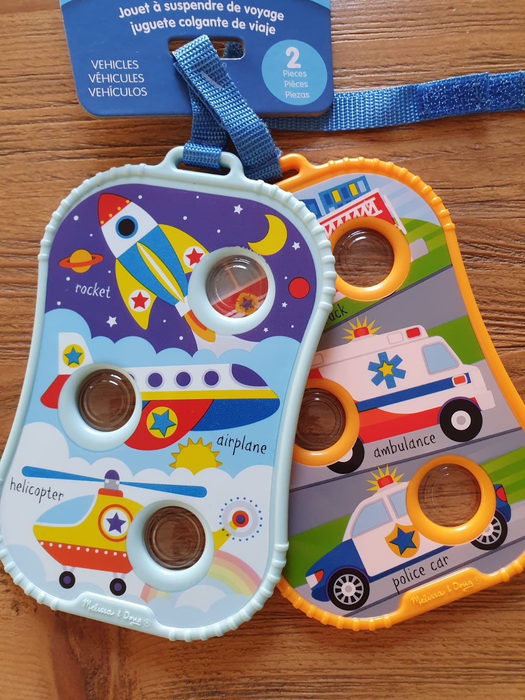
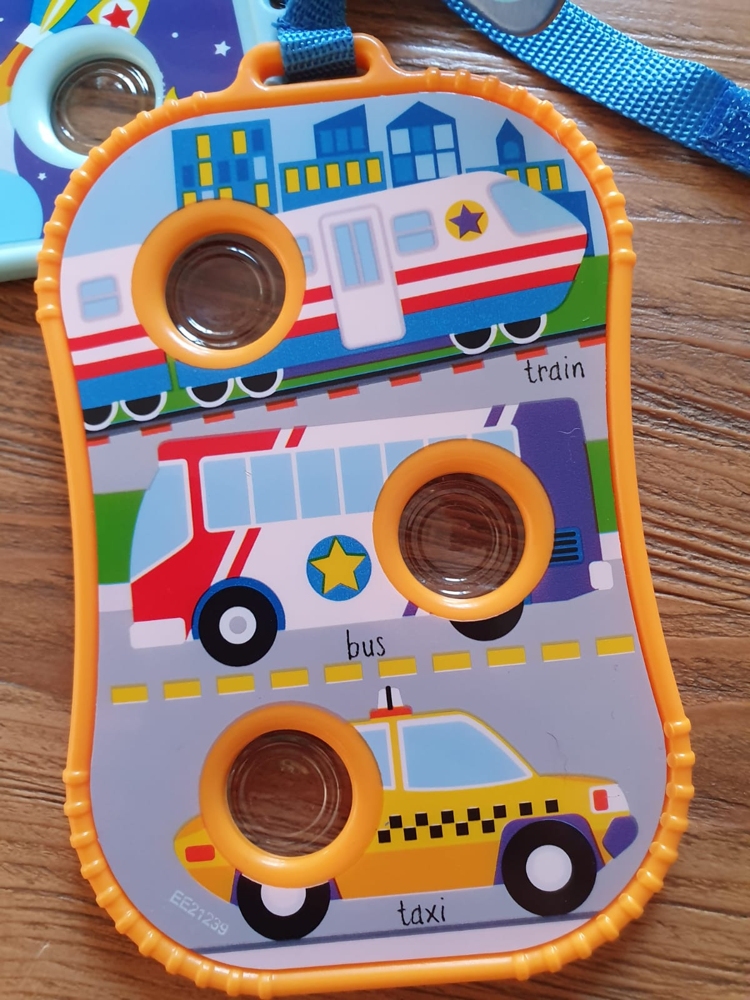
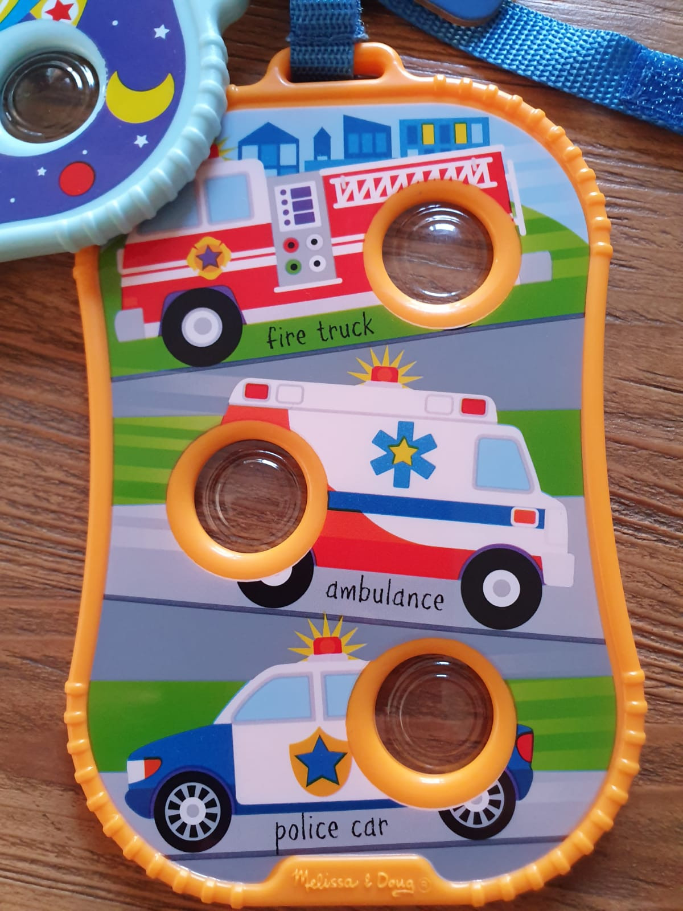
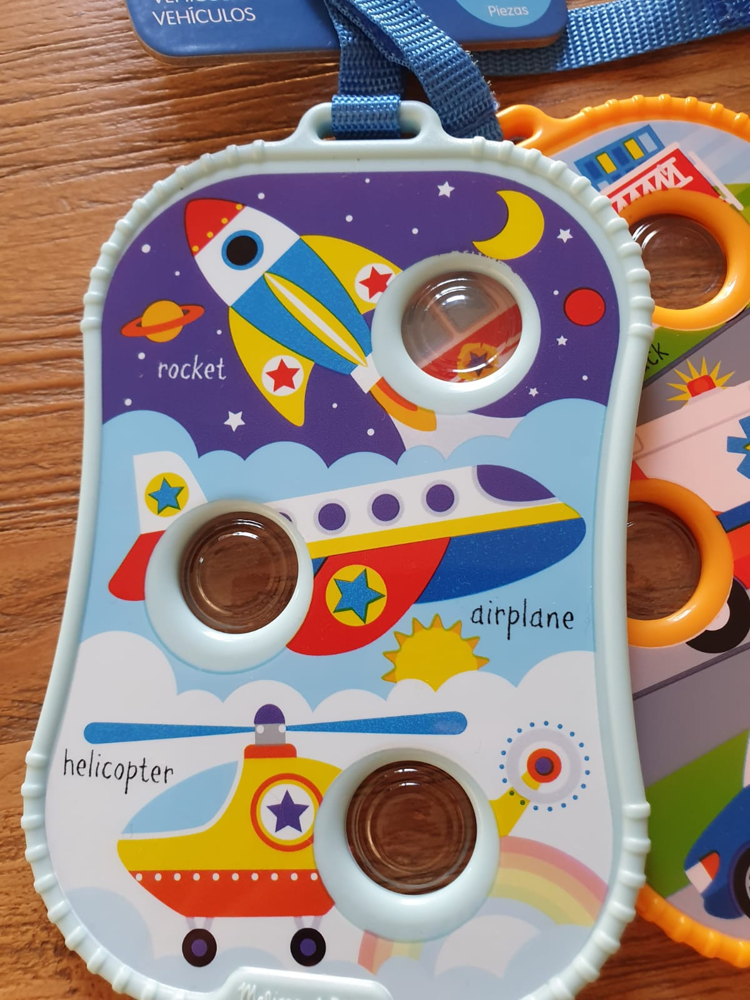
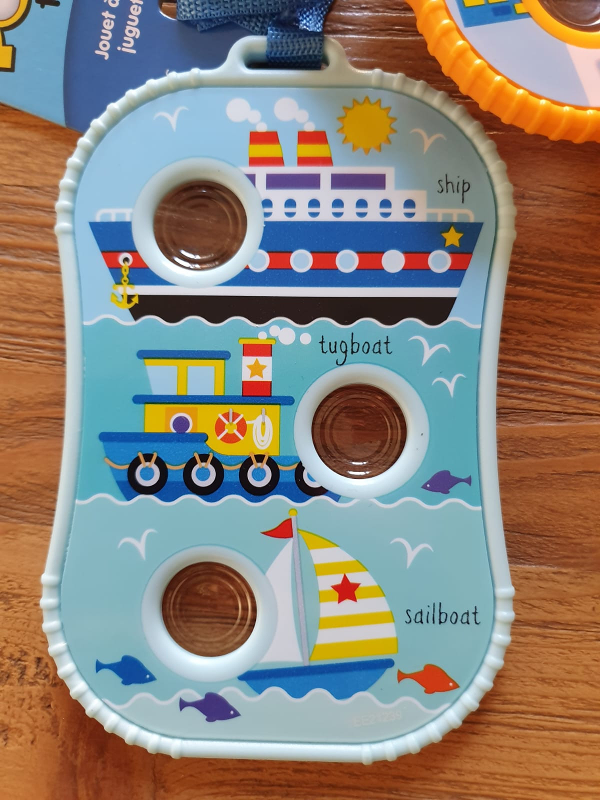
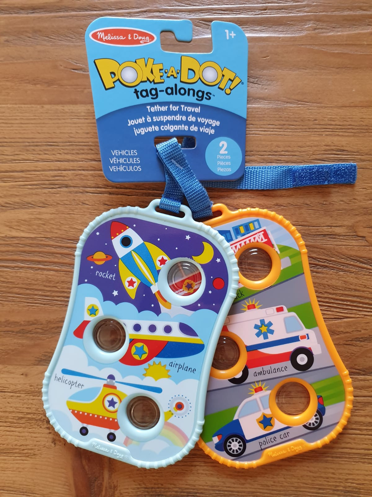

Poke a Dot Tag Along - Vehicles
Books
R140Melissa & Doug Poke a Dot Tag Alongs Vehicles NEW ~ Clip on Play Sets of 2 sturdy double-sided tags (approx. 4 inches by 6 inches each) with buttons to press and âpopâ next to illustrations of different vehicle types! Terrific travel toy thatâs always close at hand: Built-in straps tether tags to strollers, diaper bags, car seats, high chairs, and more Poke-a-Dot⢠Tag-Alongs encourage language development, counting, sensory development, and fine motor skills! Dots make different clicking and popping sounds depending on how theyâre poked
Enquire about this product




Poke a Dot Tag Along - Vehicles at Kids Corner KZN
Poke a Dot Tag Along - Vehicles is part of our Books collection. Kids Corner KZN stocks toys for learning, pretend play, creative play, gifting and everyday childhood discovery in South Africa.
Browse more Books toys